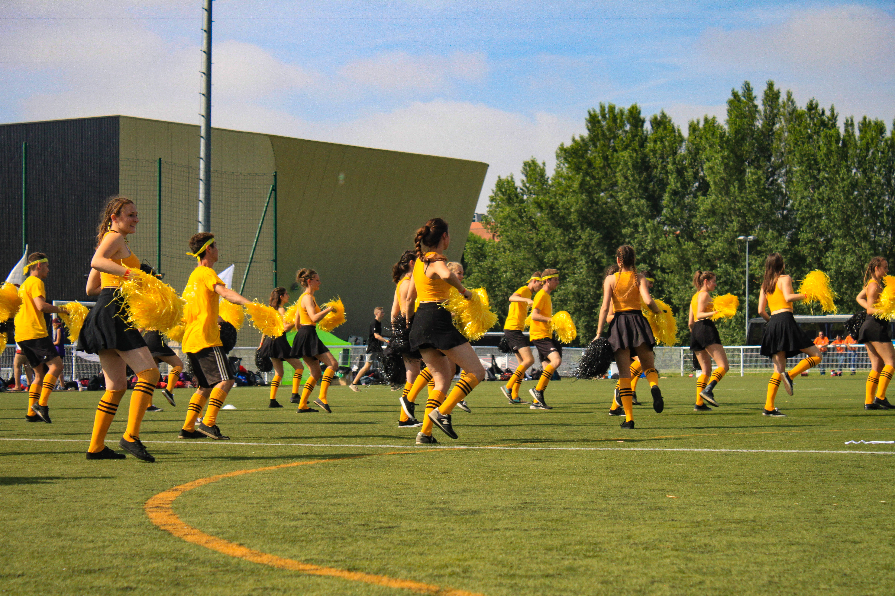
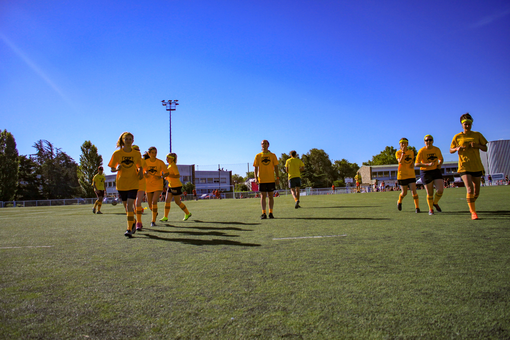

Les études d'ingénieur à l'Institut National Polytechnique de Grenoble sont ponctuées par deux évènements de grande envergure qui se déroulent annuellement. Le premier, les Olympiades, regroupe l'ensemble des écoles de Grenoble INP pour une fin de semaine. Ses 5000 étudiant.e.s s'affrontent autour de différentes épreuves sportives, musicales et artistiques. Le deuxième, les CPPiades, concerne uniquement les étudiant.es des cycles préparatoires. L'ensemble des cycles préparatoires de France se regroupent dans l'une des villes pour s'affronter, là encore, autour d'épreuves sportives et artistiques.
Engagement
Équipes sportives à Grenoble INP
Soccer, cheerleading et rugby.

Type
Engagement sportif
Période
2017-2020
Rôle
Membre
Lieu
Grenoble, France
À propos
Implications
Dès mon entrée à l'INP Grenoble j'ai pris part à ces artivités. Pendant 3 ans j'ai fait partie des équipes de rugby et de soccer. J'ai également performé dans l'équipe de Cheerleading. Cela impliquait des entrainements hebdomadaires en plus des nombreuses heures de travail qu'exigeait le cycle préparatoire. C'était tellement super que j'ai terminé ma "carrière" en me luxant le coude pendant un plaquage un peu trop violent pour moi.
Photos

Match de rugby en 2017

Échauffement avant un match de rugby en 2018

Cheerleading en 2019

Le même match de rugby en 2017

Échauffement de soccer